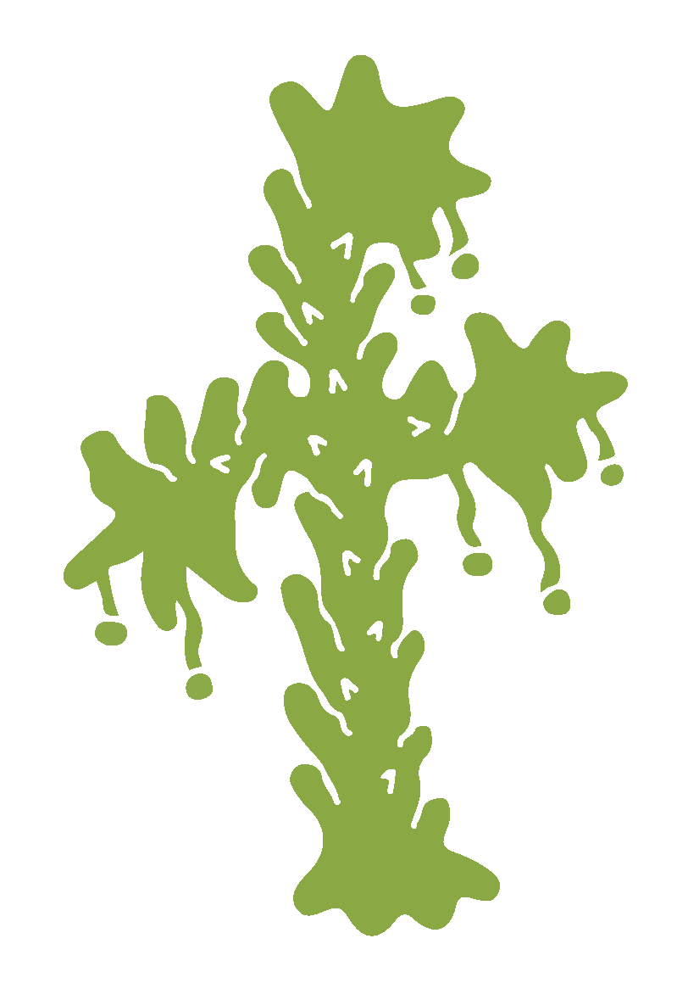
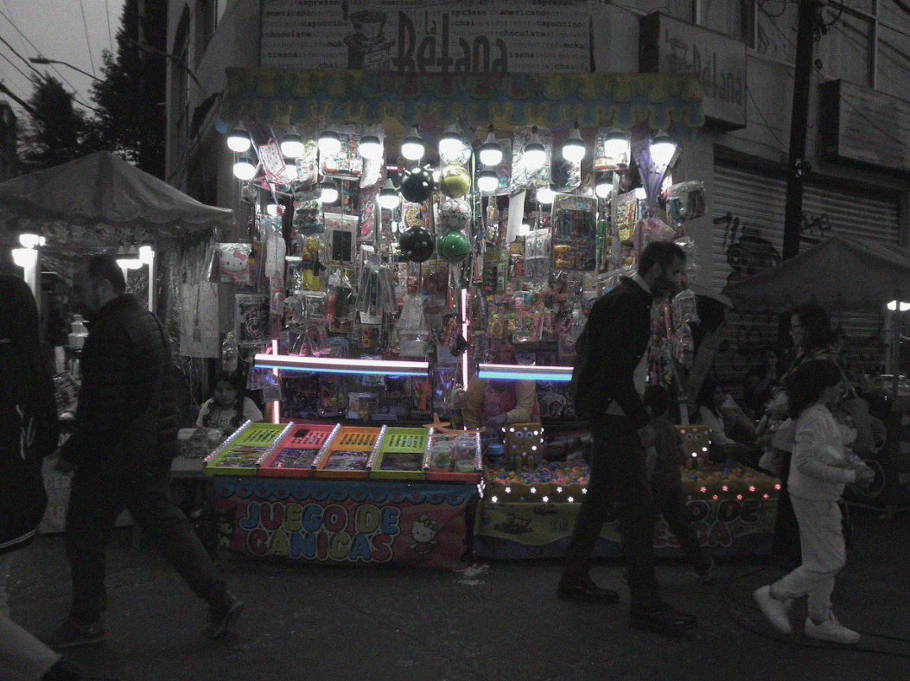
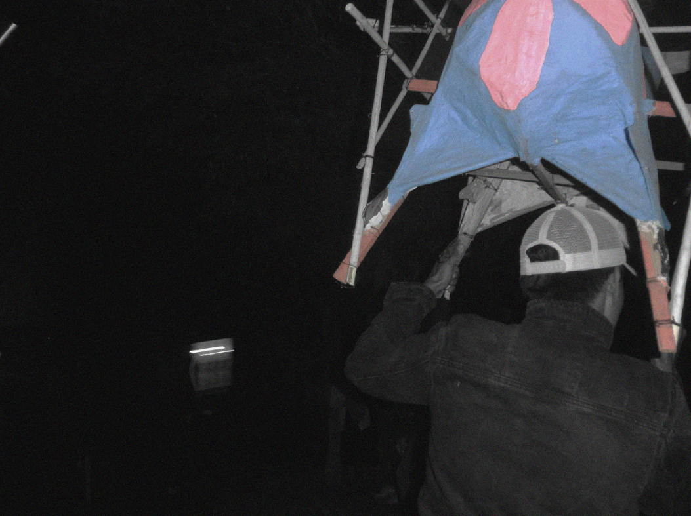
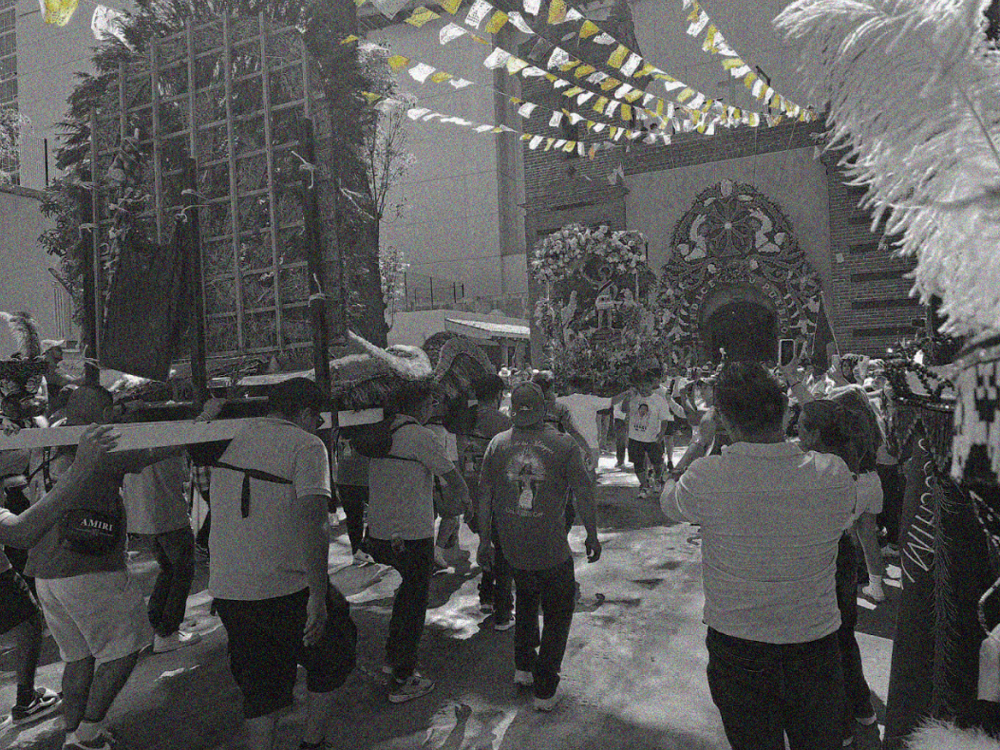
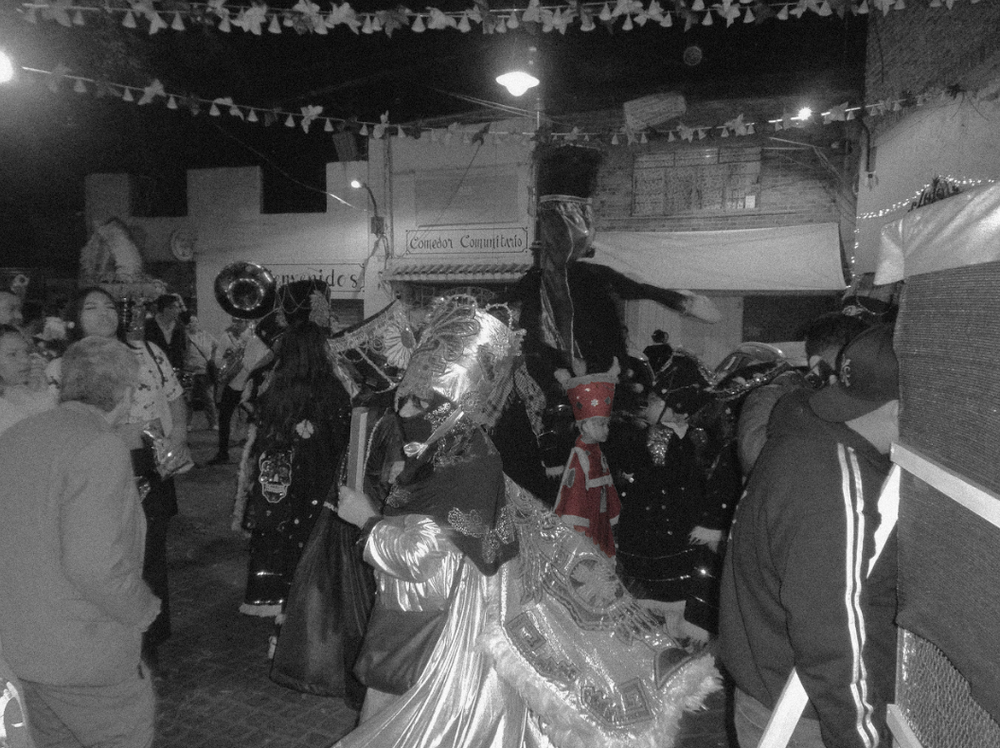
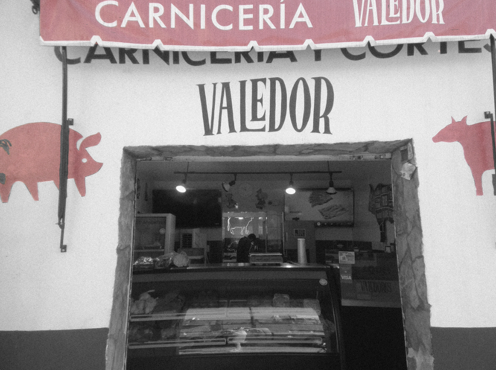
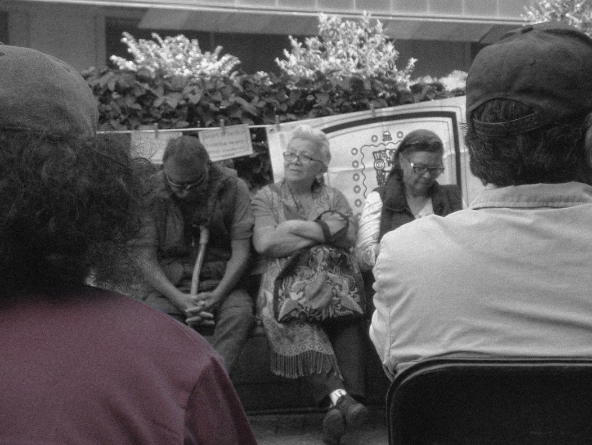
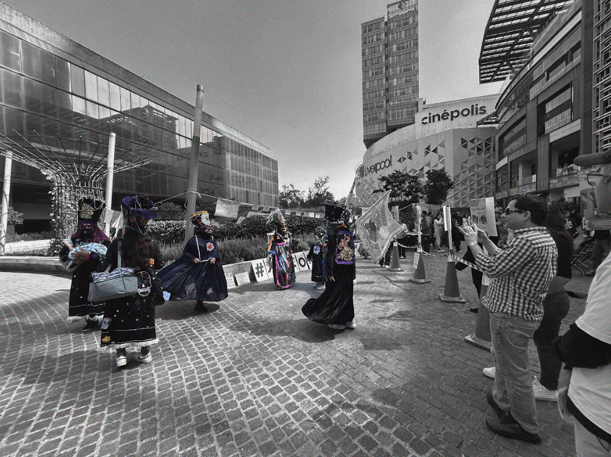

Explora los lugares emblematicos de Xoco desde una lectura comunitaria. Cada punto del mapa conecta con memorias, transformaciones urbanas y registros fotograficos que ayudan a entender como el territorio ha cambiado con el tiempo.
Este punto reune una comparativa entre el paisaje anterior y el presente, junto con fotografias que muestran la manera en que el entorno cotidiano del pueblo ha sido transformado.
La comparativa visual permite reconocer el impacto de los megaproyectos sobre la escala barrial, los recorridos y la percepcion del paisaje en San Sebastian Xoco.
Esta seccion recupera rastros materiales y visuales que ayudan a leer la historia productiva del lugar y su relacion con los procesos de urbanizacion posteriores.
Las imagenes reunidas aqui permiten observar como ciertos espacios de referencia colectiva siguen actuando como nodos de memoria y vida comunitaria.
Esta galeria amplia la lectura del mapa con un recorrido visual por escenas, rastros y fragmentos del pueblo. La idea es que el archivo complemente la experiencia interactiva con una observacion mas pausada.






